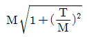
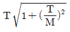
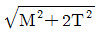
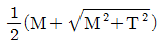
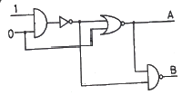
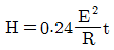

자동차정비산업기사 (2020-06-06 기출문제)
1과목: 일반기계공학
1. 두랄루민의 주요 성분원소로 옳은 것은?
- 알루미늄 - 구리 - 니켈 - 철
- 알루미늄 - 니켈 - 규소 - 망간
- 알루미늄 - 마그네슘 - 아연 - 주석
- 알루미늄 - 구리 - 마그네슘 - 망간
(정답률: 74%)

2. 압력 제어 밸브의 종류가 아닌 것은?
- 시퀀스 밸브
- 감압 밸브
- 릴리프 밸브
- 스풀 밸브
(정답률: 66%)
3. Fe-C 평형상태도에서 공정점의 탄소함유량은 몇 %인가?
- 0.86
- 1.7
- 4.3
- 6.67
(정답률: 53%)
4. 양끝을 고정한 연강봉이 온도 20℃에서 가열되어 40℃가 되었다면 재료 내부에 발생하는 열응력은 몇 N/cm2인가? (단, 세로탄성계수는 2100000 N/cm2, 선팽창계수는 0.000012/℃이다.)
- 50.4
- 504
- 544
- 5444
(정답률: 59%)
5. 무기재료의 특징으로 틀린 것은?
- 취성파괴의 특성을 가진다.
- 전기 절연체이며 열전도율이 낮다.
- 일반적으로 밀도와 선팽창계수가 크다.
- 강도와 경도가 크고 내열성과 내식성이 높다.
(정답률: 50%)
6. 다음 중 지름 10mm인 원형 단면에서 가장 큰 값은?
- 단면적
- 극관성 모멘트
- 단면계수
- 단면 2차 모멘트
(정답률: 62%)
7. 비틀림 모멘트(T)와 굽힘 모멘트(M)를 동시에 받는 재료의 상당 비틀림 모멘트(Te)를 나타내는 식은?




(정답률: 59%)
8. 피복아크 용접봉에서 피복제 역할이 아닌 것은?
- 용융 금속을 보호한다.
- 아크를 안정되게 한다.
- 아크의 세기를 조절한다.
- 용착금속에 필요한 합금원소를 첨가한다.
(정답률: 71%)
9. 작동유의 점도와 관계없이 유량을 조정할 수 있는 밸브는?
- 셔틀 밸브
- 체크 밸브
- 교축 밸브
- 릴리프 밸브
(정답률: 52%)
10. 너트의 종류 중 한쪽 끝부분이 관통되지 않아 나사면을 따라 증기나 기름 등의 누출을 방지하기 위해 주로 사용되는 너트는?
- 캡 너트
- 나비 너트
- 홈붙이 너트
- 원형 너트
(정답률: 83%)
11. 축열식 반사로를 사용하여 선철을 용해, 정련하는 제강법은?
- 평로
- 전기로
- 전로
- 도가니로
(정답률: 70%)
12. 미끄럼 베어링과 비교한 구름 베어링의 특징이 아닌 것은?
- 기동 토크가 작다.
- 충격 흡수력이 우수하다.
- 폭은 작으나 지름이 크게 된다.
- 표준형 양산품으로 호환성이 높다.
(정답률: 53%)
13. 다음 중 타동 분할 장치를 갖고 있는 밀링머신 부속품은?
- 분할대
- 회전테이블
- 슬로팅 장치
- 밀링 바이스
(정답률: 70%)
14. 내경 600mm의 파이프를 통하여 물이 3m/s의 속도로 흐를 때 유량은 약 몇 m3/s인가?
- 0.85
- 1.7
- 3.4
- 6.8
(정답률: 36%)
15. 속도가 4m/s로 전동하고 있는 벨트의 인장측 장력이 1250N, 이완측 장력이 515N일 때, 전달동력(kW)은 약 얼마인가?
- 2.94
- 28.82
- 34.61
- 69.22
(정답률: 28%)
16. 스프링 백 현상과 가장 관련 있는 작업은?
- 용접
- 절삭
- 열처리
- 프레스
(정답률: 78%)
17. 다음 중 변형률(Strain)의 종류가 아닌 것은?
- 세로 변형률
- 가로 변형률
- 전단 변형률
- 비틀림 변형률
(정답률: 61%)
18. 측정치의 통계적 용어에 관한 설명으로 옳은 것은?
- 치우침(bias) - 참값과 모평균과의 차이
- 오차(error) - 측정치와 시료평균과의 차이
- 편차(deviation) - 측정치와 참값과의 차이
- 잔차(residual) -측정치와 모평균과의 차이
(정답률: 64%)
19. 한쪽 또는 양쪽에 기울기를 갖는 평판 모양의 쐐기로서 인장력이나 압축력을 받는 2개의 축을 연결하는데 주로 사용되는 결합용 기계요소는?
- 키
- 핀
- 코터
- 나사
(정답률: 74%)
20. 테이퍼 구멍을 가진 다이에 재료를 잡아당겨서 가공제품이 다이 구멍의 최소단면 형상 치수를 갖게 하는 가공법은?
- 전조 가공
- 절단 가공
- 인발 가공
- 프레스 가공
(정답률: 76%)
2과목: 자동차엔진
21. 배출가스 정밀검사의 기준 및 방법, 검사항목 등 필요한 사항은 무엇으로 정하는가?
- 대통령령
- 환경부령
- 행정안전부령
- 국토교통부령
(정답률: 77%)
22. 베이퍼라이저 1차실 압력 측정에 대한 설명으로 틀린 것은?
- 1차실 압력은 약 0.3kgf/cm2정도이다.
- 압력 측정 시에는 반드시 시동을 끈다.
- 압력 조정 스크루를 돌려 압력을 조정한다.
- 압력 게이지를 설치하여 압력이 규정치가 되는지 측정한다.
(정답률: 76%)
23. 가솔린 연료 분사장치에서 공기량 계측센서 형식 중 직접계측방식으로 틀린 것은?
- 베인식
- MAP 센서식
- 칼만 와류식
- 핫 와이어식
(정답률: 70%)
24. 동력행정 말기에 배기밸브를 미리 열어 연소압력을 이용하여 배기가스를 조기에 배출시켜 충전 효율을 좋게 하는 현상은?
- 블로 바이(blow by)
- 블로 다운(blow down)
- 블로 아웃(blow out)
- 블로 백(blow back)
(정답률: 63%)
25. 가변 밸브 타이밍 시스템에 대한 설명으로 틀린 것은?
- 공전 시 밸브 오버랩을 최소화하여 연소 안정화를 이룬다.
- 펌핑 손실을 줄여 연료 소비율을 향상 시킨다.
- 공전 시 흡입 관성효과를 향상시키기 위해 밸브 오버랩을 크게 한다.
- 중부하 영역에서 밸브 오버랩을 크게 하여 연소실 내의 배기가스 재순환 양을 높인다.
(정답률: 63%)
26. 자동차 연료의 특성 중 연소 시 발생한 H2O가 기체일 때의 발열량은?
- 저 발열량
- 중 발열량
- 고 발열량
- 노크 발열량
(정답률: 59%)
27. 흡ㆍ배기 밸브의 냉각 효과를 증대하기 위해 밸브 스템 중공에 채우는 물질로 옳은 것은?
- 리튬
- 바륨
- 알루미늄
- 나트륨
(정답률: 72%)
28. 고온 327℃, 저온 27℃의 온도 범위에서 작동되는 카르노 사이클의 열효율은 몇 %인가?
- 30
- 40
- 50
- 60
(정답률: 45%)
29. LPI엔진에서 사용하는 가스 온도 센서(GTS)의 소자로 옳은 것은?
- 서미스터
- 다이오드
- 트랜지스터
- 사이리스터
(정답률: 74%)
30. 가변 흡입 장치에 대한 설명으로 틀린 것은?
- 고속 시 매니폴드의 길이를 길게 조절한다.
- 흡입효율을 향상시켜 엔진 출력을 증가 시킨다.
- 엔진회전속도에 따라 매니폴드의 길이를 조절한다.
- 저속 시 흡입관성의 효과를 향상시켜 회전력을 증대한다.
(정답률: 64%)
31. 디젤엔진의 직접 분사실식의 장점으로 옳은 것은?
- 노크의 발생이 쉽다.
- 사용 연료의 변화에 둔감하다.
- 실린더 헤드의 구조가 간단하다.
- 타 형식과 비교하여 엔진의 유연성이 있다.
(정답률: 67%)
32. CNG(Compressed Natural Gas)엔진에서 스로틀 압력 센서의 기능으로 옳은 것은? (문제 오류로 실제 시험에서는 3, 4번이 정답처리 되었습니다. 여기서는 3번을 누르면 정답 처리 됩니다.)
- 대기 압력을 검출하는 센서
- 스로틀의 위치를 감지하는 센서
- 흡기다기관의 압력을 검출하는 센서
- 배기 다기관 내의 압력을 측정하는 센서
(정답률: 80%)
33. 공회전 속도 조절장치(ISA)에서 열림(open)측파형을 측정한 결과 ON시간이 1ms이고, OFF시간이 3ms일 때, 열림 듀티값은 몇 %인가?
- 25
- 35
- 50
- 60
(정답률: 48%)
34. 내연기관의 열역학적 사이클에 대한 설명으로 틀린 것은?
- 정적 사이클을 오토 사이클이라고도 한다.
- 정압 사이클을 디젤 사이클이라고도 한다.
- 복합 사이클을 사바테 사이클이라고도 한다.
- 오토, 디젤, 사바테 사이클 이외의 사이클은 자동차용 엔진에 적용하지 못한다.
(정답률: 83%)
35. 전자제어 모듈 내부에서 각종 고정 데이터나 차량제원 등을 장기적으로 저장하는 것은?
- IFB(Inter Face Box)
- ROM(Read Only Memory)
- RAM(Random Access Memory)
- TTL(Transistor Transistor Logic)
(정답률: 72%)
36. 4행정 사이클 기관의 총배기량 1000cc, 축마력 50PS, 회전수 3000rpm일 때 제동평균 유효압력은 몇 kgf/cm2인가?
- 11
- 15
- 17
- 18
(정답률: 47%)
37. 최적의 점화시기를 의미하는 MBT(Minimum spark advance for Best Torque)에 대한 설명으로 가장 적절한 것은?
- BTDC 약 10°~15° 부근에서 최대폭발압력이 발생되는 점화시기
- ATDC 약 10°~15° 부근에서 최대폭발압력이 발생되는 점화시기
- BBDC 약 10°~15° 부근에서 최대폭발압력이 발생되는 점화시기
- ABDC 약 10°~15° 부근에서 최대폭발압력이 발생되는 점화시기
(정답률: 71%)
38. 전자제어 가솔린 엔진에서 티타니아 산소센서의 경우 전원은 어디에서 공급되는가?
- ECU
- 축전지
- 컨트롤 릴레이
- 파워TR
(정답률: 70%)
39. 전자제어 가솔린 연료 분사장치에서 흡입공기량과 엔진회전수의 입력으로만 결정되는 분사량으로 옳은 것은?
- 기본 분사량
- 엔진시동 분사량
- 연료차단 분사량
- 부분 부하 운전 분사량
(정답률: 77%)
40. 디젤엔진에서 최대분사량이 40cc, 최소분사량이 32cc일 때 각 실린더의 평균 분사량이 34cc라면 (+)불균율은 몇 %인가?
- 5.9
- 17.6
- 20.2
- 23.5
(정답률: 55%)
3과목: 자동차섀시
41. 휠 얼라인먼트의 주요 요소가 아닌 것은?(오류 신고가 접수된 문제입니다. 반드시 정답과 해설을 확인하시기 바랍니다.)
- 캠버
- 캠 옵셋
- 셋백
- 캐스터
(정답률: 63%)
42. ECS 제어에 필요한 센서와 그 역할로 틀린 것은?
- G센서: 차체의 각속도를 검출
- 차속센서: 차량의 주행에 따른 차량속도 검출
- 차고센서: 차량의 거동에 따른 차체 높이를 검출
- 조향휠 각도센서: 조향휠의 현재 조향 방향과 각도를 검출
(정답률: 73%)
43. 최고 출력이 90PS로 운전되는 기관에서 기계효율이 0.9인 변속장치를 통하여 전달된다면 추진축에서 발생되는 회전수와 회전력은 약 얼마인가? (단, 기관회전수 5000rpm, 변속비는 2.5이다.)
- 회전수: 2456rpm, 회전력: 32kgfㆍm
- 회전수: 2456rpm, 회전력: 29kgfㆍm
- 회전수: 2000rpm, 회전력: 29kgfㆍm
- 회전수: 2000rpm, 회전력: 32kgfㆍm
(정답률: 49%)
44. 브레이크 파이프 라인에 잔압을 두는 이유로 틀린 것은?
- 베이퍼 록을 방지한다.
- 브레이크의 작동 지연을 방지한다.
- 피스톤이 제자리로 복귀하도록 도와준다.
- 휠 실린더에서 브레이크액이 누출되는 것을 방지한다.
(정답률: 66%)
45. 무단변속기(CVT)의 장점으로 틀린 것은?
- 변속충격이 적다.
- 가속성능이 우수하다.
- 연료소비량이 증가한다.
- 연료소비율이 향상된다.
(정답률: 77%)
46. 노면과 직접 접촉은 하지 않고 충격에 완충작용을 하며 타이어 규격과 기타정보가 표시된 부분은?
- 비드
- 트레드
- 카커스
- 사이드 월
(정답률: 74%)
47. 제동 시 뒷바퀴의 록(lock)으로 인한 스핀을 방지하기 위해 사용되는 것은?
- 딜레이 밸브
- 어큐물레이터
- 바이패스 밸브
- 프로포셔닝 밸브
(정답률: 73%)
48. 엔진 회전수가 2000rpm으로 주행 중인 자동차에서 수동변속기의 감속비가 0.8이고, 차동장치 구동피니언의 잇수가 6, 링기어의 잇수가 30일 때, 왼쪽바퀴가 600rpm으로 회전한다면 오른쪽 바퀴는 몇 rpm인가?
- 400
- 600
- 1000
- 2000
(정답률: 50%)
49. 후륜구동 차량의 종감속 장치에서 구동피니언과 링기어 중심선이 편심되어 추진축의 위치를 낮출 수 있는 것은?
- 베벨 기어
- 스퍼 기어
- 웜과 웜 기어
- 하이포이드 기어
(정답률: 70%)
50. 전동식 동력 조향장치(MDPS)의 장점으로 틀린 것은?
- 전동모터 구동 시 큰 전류가 흐른다.
- 엔진의 출력 향상과 연비를 절감할 수 있다.
- 오일 펌프 유압을 이용하지 않아 연결 호스가 필요 없다.
- 시스템 고장 시 경고등을 점등 또는 점멸시켜 운전자에게 알려준다.
(정답률: 60%)
51. 공기식 제동장치의 특성으로 틀린 것은?
- 베이퍼 록이 발생하지 않는다.
- 차량 중량에 제한을 받지 않는다.
- 공기가 누출되어도 제동 성능이 현저히 저하되지 않는다.
- 브레이크 페달을 밟는 양에 따라서 제동력이 감소되므로 조작하기 쉽다.
(정답률: 54%)
52. 자동차에 사용하는 휠 스피드 센서의 파형을 오실로스코프로 측정하였다. 파형의 정보를 통해 확인할 수 없는 것은?
- 최저 전압
- 평균 저항
- 최고 전압
- 평균 전압
(정답률: 78%)
53. 대부분의 자동차에서 2회로 유압 브레이크를 사용하는 주된 이유는?
- 안전상의 이유 때문에
- 더블 브레이크 효과를 얻을 수 있기 때문에
- 리턴 회로를 통해 브레이크가 빠르게 풀리게 할 수 있기 때문에
- 드럼 브레이크와 디스크 브레이크를 함께 사용할 수 있기 때문에
(정답률: 67%)
54. 현재 실용화된 무단변속기에 사용되는 벨트 종류 중 가장 널리 사용되는 것은?
- 고무벨트
- 금속벨트
- 금속체인
- 가변체인
(정답률: 55%)
55. 선회 시 자동차의 조향 특성 중 전륜 구동보다는 후륜 구동 차량에 주로 나타나는 현상으로 옳은 것은?
- 오버 스티어
- 언더 스티어
- 토크 스티어
- 뉴트럴 스티어
(정답률: 66%)
56. 중량 1350kgf의 자동차의 구름저항계수가 0.02이면 구름저항은 몇 kgf인가?(단, 공기저항은 무시하고, 회전 상당부분 중량은 0으로 한다.)
- 13.5
- 27
- 54
- 67.5
(정답률: 50%)
57. 자동변속기 컨트롤유닛과 연결된 각 센서의 설명으로 틀린 것은?
- VSS(Vehicle Speed Sensor) - 차속 검출
- MAF(Mass Airflow Sensor) - 엔진 회전속도 검출
- TPS(Throttle Position Sensor) - 스로틀밸브 개도 검출
- OTS(Oil Temperature Sensor) - 오일 온도 검출
(정답률: 78%)
58. CAN통신이 적용된 전동식 동력 조향 장치(MDPS)에서 EPS경고등이 점등(점멸) 될 수 있는 조건으로 틀린 것은?
- 자기 진단 시
- 토크센서 불량
- 컨트롤 모듈측 전원 공급 불량
- 핸들위치가 정위치에서 ±2° 틀어짐
(정답률: 64%)
59. 수동변속기의 클러치 차단 불량 원인은?
- 자유간극 과소
- 릴리스 실린더 소손
- 클러치판 과다 마모
- 쿠션스프링 장력 약화
(정답률: 53%)
60. 전자제어 에어 서스펜션의 기본 구성품으로 틀린 것은?
- 공기압축기
- 컨트롤 유닛
- 마스터 실린더
- 공기저장 탱크
(정답률: 71%)
4과목: 자동차전기
61. 용량이 90Ah인 배터리는 3A의 전류로 몇 시간 동안 방전시킬 수 있는가?
- 15
- 30
- 45
- 60
(정답률: 79%)
62. 점화 1차 파형에 대한 설명으로 옳은 것은?
- 최고 점화전압은 15~20kV의 전압이 발생한다.
- 드웰구간은 점화 1차 전류가 통전되는 구간이다.
- 드웰구간이 짧을수록 1차 점화 전압이 높게 발생한다.
- 스파크 소멸 후 감쇄 진동구간이 나타나면 점화 1차코일의 단선이다.
(정답률: 63%)
63. 전자제어 구동력 조절장치(TCS)의 컴퓨터는 구동바퀴가 헛돌지 않도록 최적의 구동력을 얻기 위해 구동 슬립율이 몇 %가 되도록 제어하는가?
- 약 5~10%
- 약 15~20%
- 약 25~30%
- 약 35~40%
(정답률: 63%)
64. 그림과 같은 논리(logic)게이트 회로에서 출력상태로 옳은 것은?

- A=0, B=0
- A=1, B=1
- A=1, B=0
- A=0, B=1
(정답률: 51%)
65. 저항의 도체에 전류가 흐를 때 주행 중에 소비되는 에너지는 전부 열로 되고, 이때의 열을 줄열(H)이라고 한다. 이 줄열(H)을 구하는 공식으로 틀린 것은? (단, E는 전압, I는 전류, R은 저항, t는 시간이다.)
- H=0.24EIt
- H=0.24IE2t

- H=0.24I2Rt
(정답률: 55%)
66. 병렬형 하드 타입의 하이브리드 자동차에서 HEV모터에 의한 엔진 시동 금지 조건인 경우, 엔진의 시동은 무엇으로 하는가?
- HFV 모터
- 블로워 뫁
- 기동 발전기(HSG)
- 모터 컨트롤 유닛(MCU)
(정답률: 68%)
67. 냉방장치의 구성품으로 압축기로부터 들어온 고온ㆍ고압의 기체 냉매를 냉각시켜 액체로 변화시키는 장치는?
- 증발기
- 응축기
- 건조기
- 팽창 밸브
(정답률: 76%)
68. 할로겐 전조등에 비하여 고휘도 방전(HID)전조등의 특징으로 틀린 것은?
- 광도가 향상된다.
- 전력소비가 크다.
- 조사거리가 향상된다.
- 전구의 수명이 향상된다.
(정답률: 70%)
69. 다음 중 배터리 용량 시험 시 주의 사항으로 가장 거리가 먼 것은?
- 기름 묻은 손으로 테스터 조작은 피한다.
- 시험은 약 10~15초 이내에 하도록 한다.
- 전해액이 옷이나 피부에 묻지 않도록 한다.
- 부하 전류는 축전지 용량의 5배 이상으로 조정하지 않는다.
(정답률: 68%)
70. 점화순서가 1-5-3-6-2-4인 직렬 6기통 가솔린 엔진에서 점화장치가 1코일 2실린더(DLI)일 경우 1번 실린더와 동시에 불꽃이 발생되는 실린더는?
- 3번
- 4번
- 5번
- 6번
(정답률: 53%)
71. 빛과 조명에 관한 단위와 용어의 설명으로 틀린 것은?(오류 신고가 접수된 문제입니다. 반드시 정답과 해설을 확인하시기 바랍니다.)
- 광속(luminous flux)이란 빛의 근원 즉, 광원으로부터 공간으로 발산되는 빛의 다발을 말하는데 단위는 루멘(lm:lumen)을 사용한다.
- 광밀도(luminance)란 어느 한 방향의 단위 입체각에 대한 광속의 방향을 말하며, 단위는 칸델라(cd:candela)이다.
- 조도(illuminance)란 피조면에 입사되는 광속을 피조면 단면적으로 나눈 값으로서, 단위는 룩스(lx)이다.
- 광효율(luminous efficiency)이란 방사된 광속과 사용된 전기 에너지의 비로서, 100W 전구의 광속이 1380lm이라면 광효율은 1380lm/100W=13.8lm/W가 된다.
(정답률: 56%)
72. 하드타입의 하이브리드 차량이 주행 중 감속 및 제동할 경우 차량의 운동에너지를 전기에너지로 변환하여 고전압배터리를 충전하는 것은?
- 가속제동
- 감속제동
- 재생제동
- 회생제동
(정답률: 79%)
73. 기동전동기의 작동원리는?
- 렌츠의 법칙
- 앙페르 법칙
- 플레밍의 왼손 법칙
- 플레밍의 오른손 법칙
(정답률: 72%)
74. 윈드 실드 와이퍼가 작동하지 않는 원인으로 틀린 것은?
- 퓨즈 단선
- 전동기 브러시 마모
- 와이퍼 블레이드 노화
- 전동기 전기가 코일의 단선
(정답률: 74%)
75. 계기판의 유압 경고등 회로에 대한 설명으로 틀린 것은?
- 시동 후 유압 스위치 접점은 ON 된다.
- 점화스위치 ON 시 유압 경고등이 점등된다.
- 시동 후 경고등이 점등되면 오일양 점검이 필요하다.
- 압력 스위치는 유압에 따라 ON/OFF 된다.
(정답률: 57%)
76. 점화 2차 파형의 점화전압에 대한 설명으로 틀린 것은?
- 혼합기가 희박할수록 점화전압이 높아진다.
- 실린더 간 점화전압의 차이는 약 10kV이내이어야 한다.
- 점화플러그 간극이 넓으면 점화전압이 높아진다.
- 점화전압의 크기는 점화 2차 회로의 저항과 비례한다.
(정답률: 42%)
77. 디지털 오실로스코프에 대한 설명으로 틀린 것은?
- AC전압과 DC전압 모두 측정이 가능하다.
- X축에서는 시간, Y축에서는 전압을 표시한다.
- 빠르게 변화하는 신호를 판독이 편하도록 트리거링 할 수 있다.
- UNI(Unipolar)모드에서 Y축은 (+), (-)영역을 대칭으로 표시한다.
(정답률: 62%)
78. 점화코일에 대한 설명으로 틀린 것은?
- 1차 코일보다 2차 코일의 권수가 많다.
- 1차 코일의 저항이 2차 코일의 저항보다 작다.
- 1차 코일의 배선 굵기가 2차 코일보다 가늘다.
- 1차 코일에서 발생되는 전압보다 2차 코일에서 발생되는 전압이 높다.
(정답률: 59%)
79. 에어컨 시스템이 정상 작동 중일 때 냉매의 온도가 가장 높은 곳은?
- 압축기와 응축기 사이
- 응축기와 팽창밸브 사이
- 팽창밸브와 증발기 사이
- 증발기와 압축기 사이
(정답률: 58%)
80. 지름 2mm, 길이 100cm인 구리선의 저항은? (단, 구리선의 고유저항은 1.69μΩㆍm이다.)
- 약 0.54Ω
- 약 0.72Ω
- 약 0.9Ω
- 약 2.8Ω
(정답률: 36%)